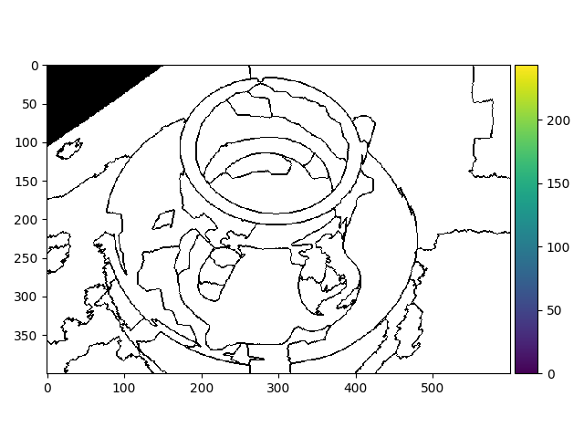

Source
SourceNote
Click here to download the full example code or to run this example in your browser via Binder
RAG Merging¶
This example constructs a Region Adjacency Graph (RAG) and progressively merges regions that are similar in color. Merging two adjacent regions produces a new region with all the pixels from the merged regions. Regions are merged until no highly similar region pairs remain.
Out:
/Users/jni/projects/scikit-image/skimage/io/_plugins/matplotlib_plugin.py:150: UserWarning: Float image out of standard range; displaying image with stretched contrast.
lo, hi, cmap = _get_display_range(image)
Clipping input data to the valid range for imshow with RGB data ([0..1] for floats or [0..255] for integers).
from skimage import data, io, segmentation, color
from skimage.future import graph
import numpy as np
def _weight_mean_color(graph, src, dst, n):
"""Callback to handle merging nodes by recomputing mean color.
The method expects that the mean color of `dst` is already computed.
Parameters
----------
graph : RAG
The graph under consideration.
src, dst : int
The vertices in `graph` to be merged.
n : int
A neighbor of `src` or `dst` or both.
Returns
-------
data : dict
A dictionary with the `"weight"` attribute set as the absolute
difference of the mean color between node `dst` and `n`.
"""
diff = graph.nodes[dst]['mean color'] - graph.nodes[n]['mean color']
diff = np.linalg.norm(diff)
return {'weight': diff}
def merge_mean_color(graph, src, dst):
"""Callback called before merging two nodes of a mean color distance graph.
This method computes the mean color of `dst`.
Parameters
----------
graph : RAG
The graph under consideration.
src, dst : int
The vertices in `graph` to be merged.
"""
graph.nodes[dst]['total color'] += graph.nodes[src]['total color']
graph.nodes[dst]['pixel count'] += graph.nodes[src]['pixel count']
graph.nodes[dst]['mean color'] = (graph.nodes[dst]['total color'] /
graph.nodes[dst]['pixel count'])
img = data.coffee()
labels = segmentation.slic(img, compactness=30, n_segments=400, start_label=1)
g = graph.rag_mean_color(img, labels)
labels2 = graph.merge_hierarchical(labels, g, thresh=35, rag_copy=False,
in_place_merge=True,
merge_func=merge_mean_color,
weight_func=_weight_mean_color)
out = color.label2rgb(labels2, img, kind='avg', bg_label=0)
out = segmentation.mark_boundaries(out, labels2, (0, 0, 0))
io.imshow(out)
io.show()
Total running time of the script: ( 0 minutes 1.721 seconds)